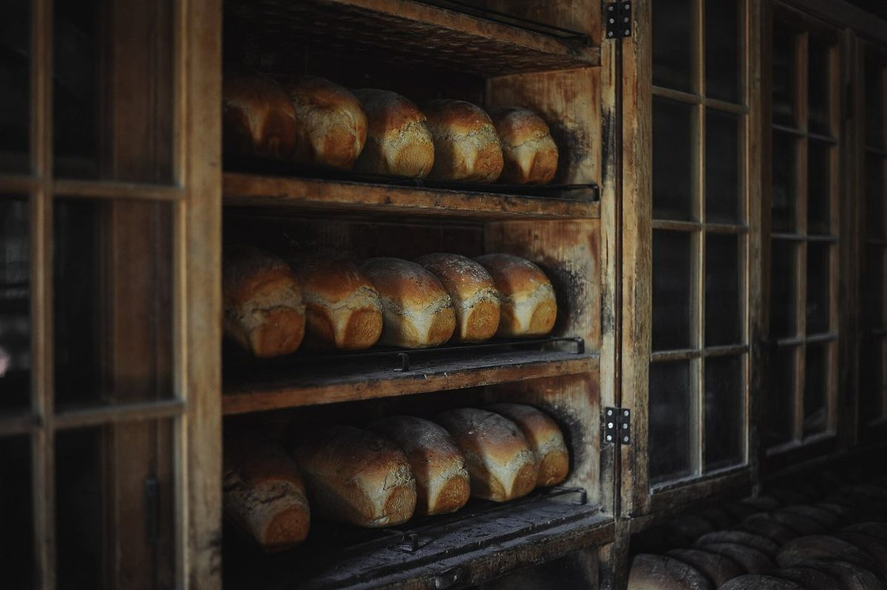
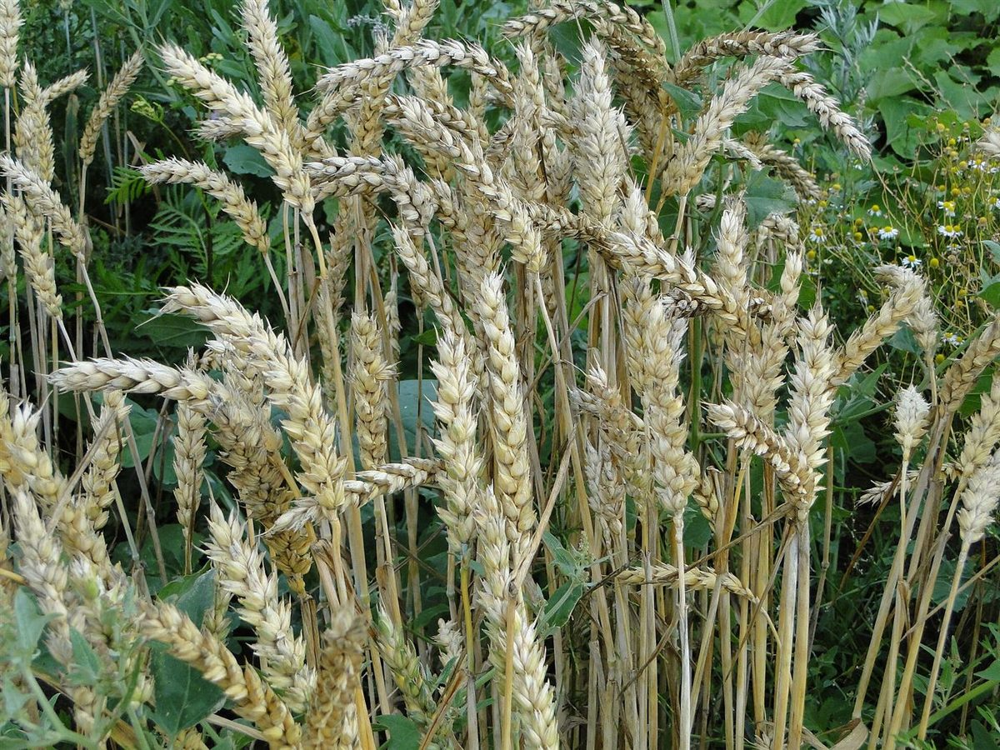

パン屋 / 岐阜県岐阜市
グランアーブル
岐阜県岐阜市にあるパン屋「グランアーブル」のご案内ページです。営業時間やメニューなど、詳しいことは準備中。まずはInstagramをのぞいてみてください。

国外・撮影地不明のイメージ。写真は左の細い端から右へ、くさび形(クレシェンド記号)に開いていきます。
制作側の連想
「グラン」から、大きく広がる記号を思い出した
屋号の由来は分かりません。制作側は「グラン(大きい)」という響きから、音楽で音の大きさを示す強弱記号を連想しました。小さく弱いppから、強く大きいffまで、記号が一段ずつ大きくなっていきます。このサイトは、その六段階をレイアウトの物差しにしています。制作側の連想で、お店の理念・由来とは無関係です。
六つの強弱記号
pp から ff まで、写真も少しずつ大きく。
写真は岐阜市のお店やお店の商品ではありません。強弱記号に合わせて選んだ、国外・撮影地不明のパンのイメージです。

ppピアニッシモ
とても弱く
pピアノ
弱く
mpメゾピアノ
やや弱く
mfメゾフォルテ
やや強く
fフォルテ
強くffフォルティッシモ
とても強く
ご案内
お店のこと(確認できたものだけ)
| 所在地 | 〒500-8175 岐阜県岐阜市長住町１丁目１７ |
|---|---|
| 電話 | なし |
| 営業時間 | 準備中 |
| 定休日 | 準備中 |
| ご予約 | 準備中 |
| 駐車場 | 準備中 |
| SNS | Instagram @grandarbre_25 |